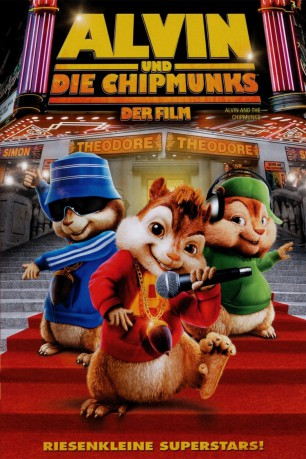

gesehen am 09.04.2016
gesehen am 09.04.2016Alternativ: Alvin and the Chipmunks gesehen am 09.04.2016
 
 IMDB-Wertung: 5.2 / 10
IMDB-Wertung: 5.2 / 10  Metascore:
Metascore: 
Dave ist Songwriter und gerade nicht besonders erfolgreich in seinem Beruf. Als durch Zufall die drei Chipmunks Alvin, Simon und Theodore in sein Leben treten, scheint das Chaos perfekt. Doch die drei sprechenden Tierchen entpuppen sich als Glücksfall für seine Karriere.
Jahr: 2007
Dauer: 92 Minuten
FSK: 0
Land: USA Studio: 20th Century FoxTonspuren: DTS - ,
Untertitel:
Auflösung: 1080p (1920x1040) Größe: 8130 MB
Genre: Animation/Trick, Komödie, Familie, Fantasy, Musik
Regisseur: Tim Hill
Drehbuch: Jon Vitti, Will McRobb, Chris Viscardi, Jon Vitti, Ross Bagdasarian
Soundtrack: Christopher Lennertz
Darsteller:
 Jason Lee als Dave
Jason Lee als Dave David Cross als Ian
David Cross als Ian Cameron Richardson als Claire
Cameron Richardson als Claire Jane Lynch als Gail
Jane Lynch als Gail Justin Long als Alvin
Justin Long als Alvin Matthew Gray Gubler als Simon
Matthew Gray Gubler als Simon Jesse McCartney als Theodore
Jesse McCartney als Theodore Veronica Alicino als Amy
Veronica Alicino als Amy Adriane Lenox als Vet
Adriane Lenox als Vet Oliver Muirhead als Butler
Oliver Muirhead als Butler Jayden Lund als Security Guard
Jayden Lund als Security Guard Erin Chambers als Press Coordinator
Erin Chambers als Press CoordinatorDatei: X:\Kinder Collections\Alvin und die Chipmunks\Alvin und die Chipmunks 1 - Der Kinofilm (2007, FSKo.Al., 1920x1040).mkv seit 12.03.2015
Festplatte: Kinder-Filme+Trick
 Es gibt insgesamt 7 Filme in der Gruppe 'Kinder Collections\Alvin und die Chipmunks'
Es gibt insgesamt 7 Filme in der Gruppe 'Kinder Collections\Alvin und die Chipmunks'